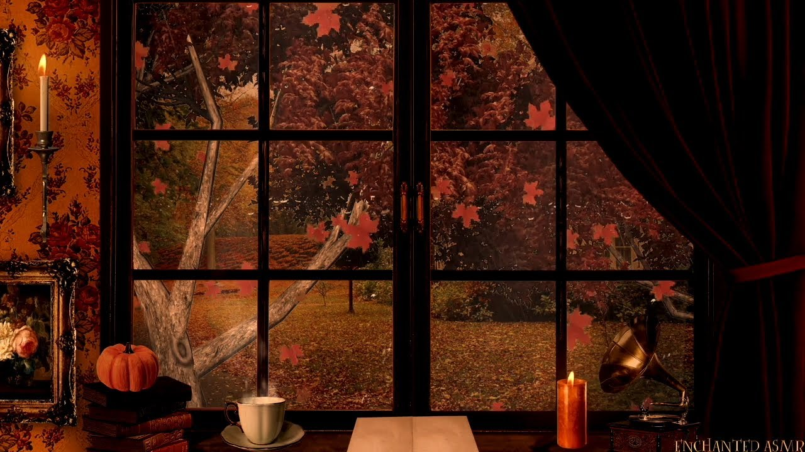

Since the weather was quite cold Aster stayed in her room for most of her day. Be in a new town and all she wasn't quite ready to bear the cold and also had no friends or family in this area. The way she usually started birthdays were by praying to God. This was something very important to her. As she prayed she sat still admiring the works of Our creator and thanking Jesus for all He has done and continue to do and placing this new chapter of life in His hands.

Next